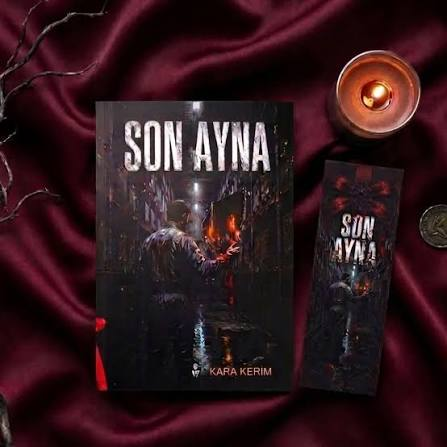

"İnsan ancak aynalardan kaçamadığı gün kendisiyle tanışır."
Edebiyat, felsefe ve varoluş üzerine kurgular...

Kara Kerim, edebiyat dünyasına "Son Ayna" adlı eseriyle adım atan, kelimelerin ve insan psikolojisinin en gizli dehlizlerine inmeyi görev edinen bir yazardır. Hikayelerinde modern insanın kalabalıklar içindeki yalnızlığını, geçmişin yakamızı bırakmayan gölgelerini ve ahlaki ikilemleri ele alır.
Sadece kurgusal eserler üretmekle kalmaz; aynı zamanda edebiyat ve sanat eleştirisi üzerine derinlikli makaleler kaleme alır. Bağımsız platformlarda yayımladığı denemeleriyle okurlarını düşündürmeye, sorgulatmaya ve rahatsız etmeye devam etmektedir.
Gerçekliğin kırılma noktalarını ve insanın kendi yüzüyle yüzleşmekten duyduğu derin korkuyu anlatan sarsıcı bir hikaye. Ana karakterin bir sabah uyandığında aynalarda kendi yansıması yerine geçmişindeki onulmaz hataları görmeye başlamasıyla açılan perde; okuru karanlık, sürükleyici ve psikolojik bir labirentin içine çekiyor.
Kafka'dan günümüze, ana karakterlerin topluma, normlara ve en nihayetinde kendi öz benliklerine yabancılaşması üzerine bir inceleme.
Devamını Oku →Kendimizi olduğumuz gibi mi görüyoruz, yoksa sadece görmek istediğimiz illüzyonlara mı inanıyoruz? Gerçeklik algısı üzerine düşünceler.
Devamını Oku →Her yaşta, her okumada farklı bir tat veren klasik eserlerin zaman içindeki dönüşümü ve okur üzerindeki psikolojik ağırlığı.
Devamını Oku →Söyleşiler, imza günleri, telif hakları veya eserlerim hakkında fikirlerinizi paylaşmak için formu kullanabilir ya da doğrudan mektup gönderebilirsiniz.
iletisim@karakerim.com
Edebiyat Ajansı, İstanbul